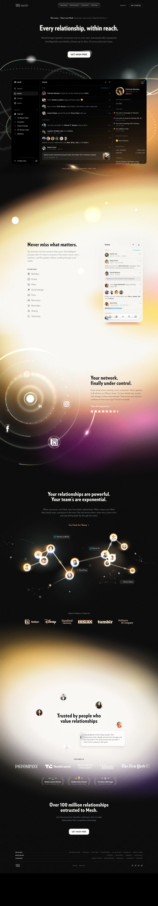

Clay 主题
Clay 的 Design.md 主题展示，围绕媒体内容、创意工具、编辑/机构、SaaS 产品组织页面。
Creative agency. Organic shapes, soft gradients, art-directed layout.
媒体内容创意工具编辑/机构SaaS 产品开发工具浅色界面B2B 产品效率工具专业工具

来源
- 来源
- getdesign.md
- 镜像
- github:VoltAgent/awesome-design-md
- 网站
- https://clay.earth/
- 详情
- https://getdesign.md/clay/design-md
色板
#0a1a1a: #0a1a1a#0a0a0a: #0a0a0a#1f1f1f: #1f1f1f#3a3a3a: #3a3a3a#e5e5e5: #e5e5e5#1a1a1a: #1a1a1a#6a6a6a: #6a6a6a#9a9a9a: #9a9a9a#f0f0f0: #f0f0f0#fffaf0: #fffaf0#faf5e8: #faf5e8#f5f0e0: #f5f0e0
字体
display: Plain Blackbody: Intermono: ui-monospacehints: Plain Black,Inter,ui-monospace,Roboto
圆角
control: 12pxcard: 24pxpreview: 24pxpill: 9999pxsource: design-md
间距
xxs: 4pxxs: 8pxsm: 12pxmd: 16pxlg: 24pxxl: 32pxxxl: 48pxsection: 96pxsource: design-md
使用建议
建议
- 建议：Anchor every page on the cream canvas ({colors.canvas} — #fffaf0). The warm tint differentiates Clay from cool-gray data sites。
- 建议：Use 3D claymation illustrations as hero artifacts. Hand-crafted 3D characters and mountains ARE the brand。
- 建议：Cycle saturated feature cards across the page — pink → teal → lavender → peach → ochre → cream. Repeating the same color twice in a row reads as off-rhythm。
- 建议：Use Plain Black at weight 500 with negative letter-spacing on every display headline。
- 建议：Show product UI fragments inside saturated feature cards. The brand voltage is product-driven, not abstract。
避免
- 避免：use cool grays for canvas. The cream tint is non-negotiable。
- 避免：use a 7th brand-color card. The 6-color palette is saturated enough。
- 避免：bold display weight beyond 500. Plain Black at 700 reads as bombastic。
- 避免：repeat the same brand-color card twice in a row。
- 避免：replace claymation illustrations with flat vector art. The hand-crafted 3D character IS the brand voice。
查看 DESIGN.md